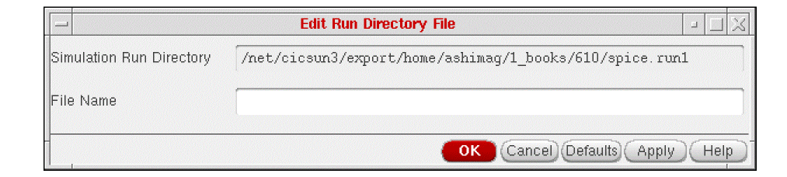

2
Creating the Input Stimulus
In this chapter, you can find information about
For information on SE SKILL APIs, see the Digital Design Netlisting and Simulation SKILL Reference.
Creating the Input Stimulus in the Control File
-
In the Schematic window, select Simulation – Stimulus – Edit File.
The following form appears:
The simulation run directory is the one you specified with theInitialize command . You cannot change the simulation run directory by editing this form. To change this directory, click Cancel and select the Initialize command again. -
In the File Name field, type the name of the simulation run directory file you want to edit.
You do not need to type a full path.
Typecontrolto edit the control file created in the simulation run directory by the Initialize command. -
Click OK.
The system brings up a new window displaying the file you specified. -
Using a text editor, edit the file in the syntax of your analysis tool.
You can type all your changes directly into the control file or you can type SE substitution functions to translate names and merge in other files. For example, to merge an input stimulus file namedsimsub.inpinto thecontrolfile, precede the file name with an exclamation point (!) and enclose the text in square brackets.[!simsub.inp]
Ifsimsub.inpis not in the current simulation run directory, type the full path as in the following example:[!/<level1InstName/.../levelnInstName>/simsub.inp]
Click the following highlighted text to view a sample control file for the SILOS II simulator. - When you finish editing the file, exit the text editor. The system automatically closes the window.
Using Substitution Functions
If needed, SE maps the names you assign on your schematic to names that are valid in the syntax of your simulator. When you refer to a net name in your
The following table summarizes the substitution functions provided by SE:
Return to top